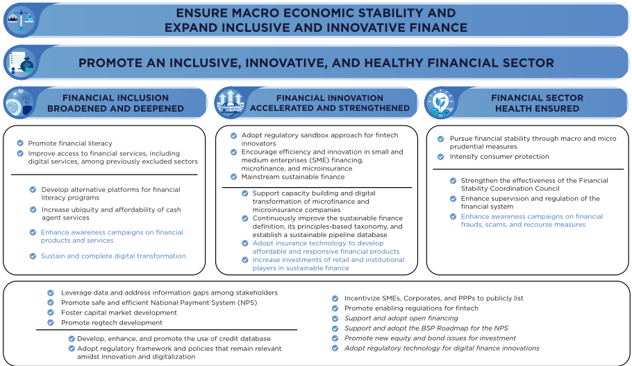
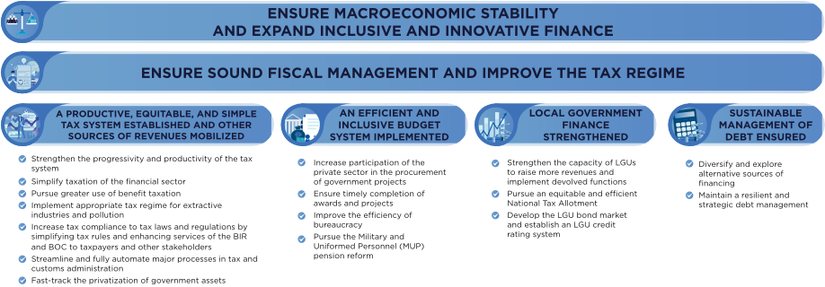

PART IV
Ensure Macroeconomic Stability and Expand Inclusive and Innovative Finance
By 2040, the Philippines is envisioned to be a prosperous, predominantly middle-class society where no one is poor. In order to push for economic transformation in a post-pandemic context, a favorable business environment is required. A vibrant and healthy financial sector will be encouraged as the Philippines moves closer to becoming an efficient and more inclusive cash-lite economy in the near future. Due to limited fiscal space, national government spending shall also be made more efficient while budget priorities will be aligned with the administration's socioeconomic agenda. These strategies ensure that the development goals outlined in the Philippine Development Plan 2023-2028 will be supported by a stable, active, and sustainable national economy.
This chapter presents the challenges facing macroeconomic stability and has two subchapters. In the first subchapter, triple outcomes will be pursued to address the challenge of dealing with promotion of an inclusive, innovative, and healthy financial sector during the Plan period. These outcomes are: (a) financial inclusion broadened and deepened; (b) financial innovation strengthened and accelerated; and (c) financial sector health ensured. In the second subchapter, four outcomes will be pursued to address the challenge of ensuring sound fiscal management and improving the tax regime. These are: (a) a productive, equitable, and simple tax system established and other sources of revenues mobilized; (b) an efficient and inclusive budget system implemented; (c) local government finance strengthened; and (d) sustainable management of debt ensured.
A vibrant and healthy financial sector is critical to ensuring a stable macroeconomy. Subchapter 11.1 presents the strategies to promote the sector's health, innovation, and digitalization. Digitalization will allow enhanced access by a greater proportion of the population to a broader range of financial products and services. These strategies will move the Philippines closer to becoming an efficient and more inclusive cash-lite economy by 2028.
Strong corporate governance and sound risk management practices coupled with the ability to leverage on digital technology contributed to the resilience of the sector during the pandemic. Digital technology also provided a more efficient means of distributing social amelioration programs to formerly unbanked recipients. The pandemic highlighted the necessity of digital technology for the financial sector.
The Philippine financial system remains sound and stable. The Philippine banking system proved resilient amidst the pandemic. The International Institute for Management Development (IMD) World Competitiveness Center identified the policy of the Bangko Sentral ng Pilipinas (BSP) as one of the country's key strengths. 1 The industry recovered and posted a 7 percent asset growth in 2021. Total loan portfolio grew by 4.8 percent in 2021 from a 0.9 percent contraction in 2020, while the non-performing loan (NPL) ratio remained manageable at 4 percent. Other key financial indicators remain favorable: universal and commercial banks' solo capital adequacy ratio and common equity tier 1 ratio stood at 16.5 percent and 15.3 percent, well above the BSP threshold of 10 and 6 percent, respectively, while liquidity coverage ratio registered at 200.9 percent, above the BSP threshold of 100 percent, on a solo basis.
The Philippine capital markets remain buoyant. In 2021, the Philippine Stock Exchange Index accelerated by 7.8 percent year-on-year (y-o-y) with market capitalization growth of 13.8 percent. Price-to-earnings ratio moderated to 21.3 in end-2021 from 28.5 in end-2020. There were eight initial public offerings in 2021 and eight so far as of September 2022. Y-o-y, the Philippines' total local currency (LCY) bond stock grew by 14.2 percent to PHP9.8 trillion in 2021, mostly due to government issuances (85.5% of the total LCY bond market as of end-2021).
The insurance industry is growing and remains profitable. Invested assets increased by 7.9 percent y-o-y in 2021
to PHP1.83 trillion. Total net income of the industry grew by 17.3 percent to PHP47.8 billion.
Early groundwork in digital payments regulatory framework proved crucial in supporting economic activities during the pandemic. The BSP's Digital Payments Transformation Roadmap (DPTR) provided broadened strategies, which are aligned with the objectives of the BSP-issued National Retail Payment System (NRPS) 2 in 2017. The NRPS paved the way for the establishment of interoperable digital payment schemes, such as the PESONet 3 and InstaPay. 4 In 2021, about a third of retail payments were already digitalized, and the digital economy contributed 9.6 percent to the country's gross domestic product (GDP). 5
Policy framework continues to support financial inclusion, digitalization, and innovation. Ownership of financial account among Filipino adults significantly increased from 28.6 percent in 2019 to 55.6 percent in 2021, well above the BSP's target of above 40 percent. In January 2022, the inter-agency Financial Inclusion Steering Committee (FISC) launched the National Strategy for Financial Inclusion (NSFI) 6 for 2022-2028. The NSFI serves as the country's blueprint for financial inclusion toward inclusive growth and financial resilience. Meanwhile, Land Bank of the Philippines' (Landbank) co-location with the Philippine Identification System (PhilSys) registration centers has onboarded over 8.0 million unbanked Filipinos as of June 1, 2022.
As part of the implementation of the DPTR, the BSP has approved six digital banks, the first of which was the Overseas Filipino (OF) Bank, a government-owned all-digital bank. The BSP has likewise institutionalized a regulatory Sandbox Framework to evaluate financial technology (fintech) concepts and encourage innovation in the financial system.
The BSP has been proactive in issuing policies concerning cybersecurity, consumer protection, data integrity, and adoption of global standards and best practices, among other key regulations, as well as in continuously collaborating with the payment industry and other government bodies to improve the facilities continuously and offer innovative options for digital payments.
The innovation by the Department of Finance (DOF) to offer retail treasury bonds, including USD-denominated bonds distributed digitally, allowed smaller investors to participate in the lending securities capital market.
The private sector continues to invest in the growing fintech industry. Fintech Alliance of the Philippines reports 216 fintech entities in the country. The fastest growing segments are mobile wallets, online payments, and wire transfers. It is estimated that there are 54.1 million active clients in 2021.
Laws passed supportive of financial inclusion, digitalization, innovation and health of the financial sector include Personal Property Security Act (Republic Act No. 11057), PhilSys Act (RA 11055), Innovative Startup Act (RA 11337), Financial Institutions Strategic Transfer Act (RA 11523), Financial Products and Services Consumer Protection Act (RA 11765), National Payment Systems Act (RA 11127), amendment to RA 7653 or the New Central Bank Act (RA 11211), and Agricultural, Fisheries, and Rural Development Financing Enhancement Act of 2022 (RA 11901).
Strong policy framework and effective government support enabled the financial sector to achieve seven out of eight core indicator targets in the Philippine Development Plan (PDP) 2017-2022. These include the proportion of adults with an account, financial system's total assets/ GDP, equity market capitalization/GDP (%), LCY bond market as percent of GDP, cumulative access points per 10,000 adults, microinsurance penetration, and volume of retail e-payments.
Despite positive developments in the financial sector, weaknesses and challenges remain. The digital divide persists. Issues on trust and confidence in formal financial services, especially those offered through digital channels, hamper faster inclusion and digital innovation. These are exacerbated by incidents of fraud and breach of cybersecurity. The 2021 Financial Inclusion Survey disclosed that income concerns, inadequate documents to support account ownership, and low financial literacy rate are the main challenges to opening an account, which is an important first step in accessing other financial products and services such as savings, investments, credit and insurance products.
The annual value of microfinance loans as of the end of 2021 registered at PHP89.3 billion, which is below the PHP104.7 billion target in the PDP 2017-2022 owing to the negative impact of the pandemic, particularly in terms of the decline in the number of microfinance non-government institutions' account ownership. Microfinance institutions (MFI) face numerous challenges, including weaknesses in the capacity to assess client over-indebtedness and monitor clients efficiently, and the limited digitalization of financial services. 7
While the insurance industry grew in terms of assets and net income, the proportion of adults with insurance declined. Likewise, the total number of individuals with microinsurance coverage decreased.
For cooperatives, business continuity and resiliency are some of the challenges to be hurdled. Adoption of technological innovations
To ensure macroeconomic stability, the financial sector must be characterized by greater inclusiveness, beneficial innovation, and continuing health. Toward these goals, financial inclusion must be broadened and deepened, financial innovation accelerated and strengthened, and the health of the financial sector ensured. These outcomes are the expected results of the 11 main strategies proposed in the diagram below. Some strategies cut across all three expected outcomes. The three outcomes are likewise interconnected. For instance, an inclusive will enable cooperatives to reduce costs and improve accessibility of services to the members.
Other challenges remain that need to be addressed to achieve an inclusive, innovative, and healthy financial sector. Numerous documentary requirements for business registration and lack of access to venture capital funds hinder fintech development and financial innovation in general. Banks have to embrace digital transformation fully and adopt a "coopetition" perspective to allow open banking to flourish. The development of Philippine capital markets lags behind that of Association of Southeast Asian Nation peers while issues on mainstreaming sustainable finance remain.
financial system and a healthy financial sector can be mutually reinforcing. If the financial system is stable, people will be encouraged to deposit in banks and use formal financial services. On the other hand, retail deposits provide a stable funding base during bank runs (as opposed to large-value deposits of big-ticket depositors). Financial innovations that address access barriers among traditionally unserved/underserved markets (e.g., low-income households, informal workers) can support financial inclusion objectives.

Note: Sample sub-strategies for government and private sector (italicized) participation in achieving main strategies were indented.
The 11 main strategies require cooperation between the private sector and the government. The strategy framework also shows samples of specific sub-strategies classified according to the degree of responsibility for delivery of either the private sector or the government. The sub-strategies were mostly culled from and considered as among the most important measures and strategies listed in various strategy documents, e.g., FISC NSFI 2022-2028, Inter-Agency Task Force for Sustainable Finance Road Map, and International Monetary Fund (IMF) assessment reports.
Financial inclusion is not only about increasing the number and proportion of the country's population with access to financial products and services. Financial inclusion involves reducing the demographic disparities among those who are able to participate in the formal financial sector and those who are unable. It also means that those who are able to participate can access not just payment systems but also a broader range of products and services. This outcome can be achieved by promoting greater awareness among the population of the benefits of participating in the formal financial sector and by increasing the range of products and services they can more easily access.
The government will develop alternative platforms for financial literacy programs, including for OFs e.g., through the BSP, Landbank and other government financial institutions, and other financial regulators, such as the Cooperative Development Authority, Securities and Exchange Commission (SEC), Insurance Commission, and Philippine Deposit Insurance Corporation. Private financial institutions (FI)-both banks and non-banks-can enhance the awareness campaigns on financial products and services.
The government will enable broad-based access to both traditional and digital financial services by accelerating the implementation of PhilSys and expanding its use in the financial sector. In this endeavor, the OF Bank and interested stakeholders can collaborate with the Philippine Statistics Authority to facilitate their onboarding into the system.
Promoting more savings and investments among OFs and their families may be achieved through improved digital platforms and remittance services, which the government can in turn help foster through greater support for innovation and competition in the sector. Improved financial and digital infrastructure would not only facilitate cost and credit risk reduction, but also the wider-scale adoption of digital financial services. In off-grid areas, the BSP will promote the development of interoperable 'offline' digital payment solutions that would enable financial transactions to take place without the need for internet connection, consequently boosting financial inclusion in these areas. As a rule, all the digital transformation programs of FIs should be consistent with the BSP DPTR.
Fostering the growth and development of smaller FIs involves addressing some of the disadvantages that they face for being small. The government will develop and implement a regulatory framework for the participation of qualified MFIs, non-government organizations, and cooperatives in retail payment systems governed by a payment system management body, such as the Philippine Payments Management, Inc. (PPMI), which with increased digitalization, would enable smaller FIs' greater efficiency, diversity and flexibility in the services that they can offer. Moreover, the government will promote a shared agent network framework primarily to increase the ubiquity and affordability of cash agent services. To provide venture capital funds to private sector fintech companies, the National Development Company will be revitalized to assist in the growth of fintech companies delivering digital financial services.
Rapid advances in technology and the increasing needs of the market - both in periods of calm and crisis - have fostered the development and acceptance of a wide array of innovative financial products and services in the sector. Innovation can be beneficial and thus must be quickly made available to consumers. However, it will be prudent to test innovative products and services before these are made fully available to consumers. While innovation across a wide range of products and services is helpful, the government has to ensure innovative progress in important developmental markets, products, and services.
The BSP will encourage fintech companies to capitalize on the regulatory sandbox of the BSP to ensure that innovation will benefit users while complying with regulations. Using its four-stage process of application, evaluation, testing and exit, the BSP will continue to maintain a test and learn environment to encourage responsible innovation. The private sector, specifically fintech companies who qualify, can participate to test their products and services in the regulatory sandbox. BSP-supervised financial institutions (BSFI) can take advantage of the "regulatory sandbox lite" feature of the framework.
The government will create an enabling environment and adopt programs to promote financing products responsive to the needs of micro, small and medium enterprises (MSME) and cooperatives which may not have the necessary documents, credit history, or collateral to access the usual financing sources. Value chain and supply chain financing, as well as movable asset financing, are lending methodologies that can viably expand the financing options of MSMEs and cooperatives for their working capital and other financing requirements. Well-designed guarantee programs, efficiency enabling electronic platforms, and enabling laws, such as for modern warehouse receipts systems, are some of the necessary conditions for a vibrant market for movable asset financing, including supply chain financing and warehouse receipts financing. Additionally, the government will enhance the implementation of the Credit Surety Fund through the organization and strengthening of Credit Surety Fund Cooperatives to assist in credit risk mitigation for MSMEs.
Moreover, enhanced support for MSMEs and cooperatives, especially in the regions, can be achieved through the provision of credit guarantee facilities under the Philippine Guarantee Corporation (PHILGUARANTEE), with the aim of facilitating and promoting trade and investments and regional development. PHILGUARANTEE's MSME Credit Guarantee Program will target priority MSME and agriculture segments, including women-owned and women-led enterprises. To diversify financing sources, especially for MSMEs and cooperatives, the SEC will encourage crowdfunding by continuously promoting competition in the market through the promulgation of rules for registration (e.g., granting of more permits) and licensing of innovative and other trading markets for innovative securities, securities of small and medium growth and venture enterprises, and technology-based ventures.
The government will support the capacity building and digital transformation of microfinance and microinsurance companies and will promote the development of microinsurance products that cover disaster risks. The expansion of agriculture insurance will be promoted through greater private sector participation. The private sector can adopt insurance technology (InsurTech) to develop affordable and responsive financial products. Markets and mechanisms for risk protection shall likewise be expanded, including social insurance and pension, while the capabilities of Financial Service Providers (FSP) that are mission-driven and strategically positioned to serve rural and low-income communities shall also be strengthened.
The government will continuously improve the mainstreaming of sustainable finance through the adoption of a principles-based taxonomy, the establishment of a sustainable pipeline database, and the promotion of sustainable financial products. Financial institutions will need to institutionalize sustainability principles in their management and governance frameworks and will have to consider, where relevant and applicable, strategies, priorities, and guiding principles contained in the Philippines Sustainable Finance Roadmap and Philippine Sustainable Finance Guiding Principles. Moreover, the private sector can support this strategy by promoting investments in sustainable finance to their retail and institutional clients and their own asset management groups.
The financial sector, especially BSFIs, is a significant component of the economy. It is vital to ensure the health, in terms of stability and growth, of these financial institutions. The health of the sector is also reflected in the confidence of consumers in the country's financial system, which in turn is fostered when consumers do not unduly suffer financial asset losses due to inadequate consumer protection.
A safe and sound financial system serves as an important foundation for accelerating financial innovation and deepening financial inclusion. To this end, the BSP will continue pursuing its mandate to maintain financial stability through the Financial Stability Coordination Council
(FSCC), an inter-agency council tasked to ensure financial stability through macroprudential measures to manage systemic risk. To enhance the effectiveness of the FSCC, the IMF 8 recommends enhancing the macroprudential strategy framework, expanding its macroprudential toolkit, 9 and introducing macroprudential stress testing. Additionally, the influence of FSCC decisions can be strengthened by providing sectoral regulators 10 with a financial stability objective. Efforts of financial regulators to enhance supervision and regulation of the financial system through information sharing, harmonization of regulations, and coordinated supervisory measures under bilateral arrangements and of the Financial Sector Forum are likewise critical in promoting financial stability. The BSP will also maintain close supervision of banks and adopt microprudential measures to ensure the protection of customers and other stakeholders.
The government will intensify financial consumer protection by effectively implementing the Financial Products and Services Consumer Protection Act, including more effective client recourse and stronger cybersecurity measures. The continued enhancement of the regulatory environment and capacities will promote greater innovation, competition, and consumer protection across all FSPs. Meanwhile, private FIs can ramp up awareness campaigns on financial frauds, scams, and recourse measures.
The following strategies cut across and will help achieve the three desired outcomes of financial inclusion, innovation, and health. The availability and regulated sharing of timely, accurate, and reliable information will allow for more efficient funding decisions, broader and protected consumer access to financial products and services, and prudent and beneficial innovation. The development of the capital markets, through progressive and innovative products and policies, will provide more investment opportunities to retail investors, broadening and deepening financial inclusion and at the same time improving the resiliency of the financial sector with a deeper capital market. An efficient and secure national payment system
(NPS) will enable and support the growth of financial transactions. Finally, the use of technology for reporting, supervision, and compliance will facilitate financial inclusion and innovation and more importantly, ensure a well-functioning financial sector.
The government will promote the use of credit databases; 11 develop frameworks and tools for collecting and sharing the financial data of agriculture-related firms, MSMEs and cooperatives for credit evaluation; fully operationalize the movable collateral registry system; and promote the secure sharing of financial data among stakeholders. The passage of the Warehouse Receipts law can significantly enhance MSMEs' access to short-term financing, including valuechain financing for exports and agriculture. The government will establish a credible registry to increase the participation of both borrowers and lenders, raise liquidity, and allow greater access to financing by MSME borrowers and more investment outlets for retail investors.
Meanwhile, the private sector can support and adopt open financing to utilize permissioned-access to financial information needed to develop and offer innovative products or services that are responsive to customers' needs. The government, through the Open Finance Oversight Committee, shall promote non-discriminatory membership by ensuring that key areas of interest of the financial industry are adequately represented and that all members and applicants for membership are treated fairly and consistently. Moreover, the BSP intends to approach the implementation in a tiered manner (e.g., by data sensitivity, data type, and data holder type) to ensure that risk spillovers are mitigated and benefits of open finance are optimized.
BSFIs will adopt and implement the digital transformation framework laid out in the BSP DPTR. At the same time, the BSP will continue to build capacity to ensure that it adopts regulatory frameworks and policies that remain dynamic amidst innovations in and digitalization of the country's payment system.
Capital market development can enhance domestic financial stability by providing new tools not only to raise funds, but also manage risks. 13 Fostering capital market development involves encouraging the listing of qualified firms to enable them to raise funds in the equity market. In this endeavor, the SEC, together with the Philippine Stock Exchange, will educate corporates about the easing of listing requirements. Moreover, the government will incentivize SMEs and PPPs to become publicly-listed firms and will privatize selected government-owned and -controlled corporations and consider publicly listing those which can be attractive to retail and institutional equity investors.
In terms of developing the domestic credit market, the government will support the development of a local credit market and a credible and independent local government unit (LGU) credit rating system, including the conduct of a comprehensive preliminary study on the development of an LGU bond market (See Chapter 11.2). This would provide the public both a means to participate in local governance and an alternative channel for their savings to fund productive investments. As a source of funds, the government can leverage OF remittances for strategic development.
The private sector and government, working jointly in the Capital Markets Development Council, will continue to implement the strategies outlined in the current Capital Markets Development Road Map. Banks can encourage their medium and large corporate clients to strengthen their capital structure by raising equity in the stock market; or for corporates to leverage their balance sheets, raising long-term funding via bond issuances.
Banks can also promote new equity and bond issues for investment through their retail and institutional clients, including small investors who should be able to access these investment products through the banks' digital services.
BSP will continue to promote the use of regulatory technology (RegTech) by supervised entities and adopt supervisory technology as it digitalizes reportorial requirements and uses artificial intelligence
Table 11.1.1 presents the priority bills for the 19th Congress to promote an inclusive, innovative, and healthy financial sector.
| PROPOSED BILL | RATIONALE/KEY FEATURES | RESPONSIBLE AGENCY |
|---|---|---|
| Bank Deposits Secrecy Bill | This bill will strengthen the banking system's capacity to effectively combat tax evasion, money laundering, and other financial crimes. | BSP |
| Internet Transaction Act | This act will regulate all Business-to-Business and Business-to-Customer commercial transactions over the internet, including those related to internet retail, online travel services, digital media providers, ride hailing services, and digital financial services | Department of Trade and Industry |
| Digital Payments Act | This aims to provide ample legal support for all government institutions to adopt digital payments in collections and disbursements, including the provision of the corresponding budgetary requirement and appropriations to support the transformation of payments received and disbursed into digital form; and to grant authority to relevant government institutions to develop an incentive mechanism that would encourage merchants to adopt digital payments in their operations, among others. | BSP |
| Capital Markets Development Act | It will expand capital market by developing robust institutional investor base, strengthening regulatory environment, and promoting financial literacy. | Securities and Exchange Commission (SEC) |
| Financial Accounts Regulation Act | It aims to strengthen consumer protection and impose higher penalties for financial cybercrimes. | BSP |
| Amendments to the Warehouse Receipts Law | This will overhaul the present warehouse receipt system and provide an online registry system where all electronic warehouse receipts can be registered and accessed. | SEC |
for its supervisory functions. RegTech will help fight cybercrimes and benefit financial sector firms and supervising agencies. To improve regulatory compliance, the private sector can adopt RegTech in pursuing greater digitalization to improve the design and delivery of innovative financial products and services. RegTech will be able to provide efficient and effective public and private sector solutions to prevent fraud, money laundering, and terrorist financing; streamline prudential reporting; conduct effective creditworthiness assessments; and provide a more efficient, timely, and accurate manner of meeting reportorial and compliance requirements, among others.
Table 11.1.2 presents the indicators and targets during the Plan period to promote an inclusive, innovative, and healthy financial sector.
| BASELINE | ANNUAL PLAN TARGETS | MEANS OF VERIFICATION | RESPONSIBLE AGENCY/INTER- AGENCY BODY | ||||||
|---|---|---|---|---|---|---|---|---|---|
| INDICATOR | (YEAR) | 2023 | 2024 | 2025 | 2026 | 2027 | 2028 | ||
| Outcome 1: Financial inclusion broadened and deepened | |||||||||
| Proportion of adults (15 years and older) with an account at a bank or other financial institutions or with a mobile- money service provider increased (%) | 55.6 (2021) | ≥70.0 | ≥70.0 | ≥75.0 | ≥75.0 | ≥80.0 | ≥90.0 | BSP Demand Side survey | BSP |
| Proportion of E-income socioeconomic class with accounts to proportion of ABC income class with accounts increased (%) | 55.1 (2021) | ≥60.0 | ≥60.0 | ≥65.0 | ≥65.0 | ≥70.0 | ≥75 | BSP Demand Side Survey | BSP |
| Outcome 2: Financial innovation accelerated and strengthened | |||||||||
| Volume of digital payments over total retail payment transactions in the country increased (%) a | 30.3 (2021) | 50.0 | 52.0- 54.0 | 54.0- 58.0 | 56.0- 62.0 | 58.0- 66.0 | 60.0- 70.0 | Payment System Oversight Department Dashboard | BSP |
| Number of financial technology (fintech) companies increased | 216 (2021) | 221 | 226 | 231 | 240 | 250 | 260 | Fintech Alliance | SEC |
| Outcome 3: Financial sector health ensured | |||||||||
| Ratio of Financial System's Total Assets to gross domestic product (at current prices) increased (%) | 149.4 (2021) | 129.5 | 129.5 | 129.5 | 129.5 | 129.5 | 129.5 | ||
| a) Banks and Non-Banks b | 135.0 (2021) | >116.0 | >116.0 | >116.0 | >116.0 | >116.0 | >116.0 | Report on Total Resources of the Philippine Financial System, National Income Accounts | BSP, Government Service Insurance System (GSIS), Social Security System (SSS), etc. c |
| b) Insurance Commission (IC) supervised | 11.7 d (2021) | 11.0 | 11.0 | 11.0 | 11.0 | 11.0 | 11.0 | IC Annual Reports, National Income Accounts | IC |
| c.) Cooperative Development Authority (CDA)-supervised cooperatives (less coop banks and insurance coops) | 2.7 (2021) | 2.5 | 2.5 | 2.5 | 2.5 | 2.5 | 2.5 | CDA | |
a/ Refers to the percentage of digital payments volume over total retail payments volume where digital payment refers to a payment transaction between two parties where both the payer and payee utilized digital payment instrument/channel in making the transaction. While retail payments refers to payments that meet at least one of the following: (a) the payment is not directly related to a financial market transaction; (b) the settlement is not time-critical; (c) the payer, the payee, or both are individuals or non-financial organization; or (d) either the payer, the payee or both are not direct participants in the payment system that is processing the payment.
b/ Non-banks comprised of BSP-supervised Investment Houses, Financing Companies, Investment Companies, Securities Dealers/Brokers, Pawnshops, Lending Investors, Non-Stock Savings and Loan Associations (NSSLA), Credit Card Companies, Government Non-bank Financial Institutions (i.e., PHILGUARANTEE and Small Business Corporation[SBC]), and Authorized Agent Banks (AAB) Forex Corporations, wherein assets are reported gross of allowance for probable losses and net of depreciation. Data on non-banks are based on Consolidated Statement of Condition, except for NSSLAs which is based on Financial Reporting Package. Non-bank institutions also include SSS, GSIS, and private insurance companies (i.e., life insurance companies, non-life insurance companies, and professional reinsurers), wherein assets are reported net of allowance for probable losses and depreciation.
c/ BSP, GSIS, SSS, and other Government Non-Bank Financial Institutions (e.g., PHILGUARANTEE and SBC).
d/ Data sourced from unaudited financial statements submitted by Insurance Commission-regulated entities for Q4 2021.
Significant gains have been made by the government in broadening tax bases and strengthening excise taxation as a regulative tool. The structure and administration of the incentive system have been reformed to harmonize the revenue needs of the country with the promotion of investments.
The post-pandemic challenge is to sustain the country's economic recovery while maintaining fiscal sustainability amid global uncertainties. The country's socioeconomic development needs will continue to be financed through a progressive and simplified tax system and more efficient tax administration through the adoption of digital technology.
National government spending will be made more efficient while budget priorities will be aligned with the administration's socioeconomic agenda. Consistent with the devolution of services to local governments, rightsizing of the bureaucracy will be pursued. At the same time, the government will continue to recognize the important role of the private sector in development.
Sources of funding will be diversified through the development of the capital market, including the local government bond market.
These policy thrusts are aligned with the Medium-Term Fiscal Framework of the incumbent administration. With the efficient mobilization and utilization of resources, the national government will focus on achieving fiscal sustainability by bringing down the deficit-to-gross domestic product (GDP) ratio to 3 percent by 2028 and the national government debt-to-GDP ratio to less than 60 percent by 2025.
The global health crisis triggered a sharp decline in economic activities, which negatively affected tax collections. Revenue-to-GDP ratio declined to 15.5 percent in 2021 from 16.1 percent in 2019. Tax effort also slid to 14.1 percent in 2021 from 14.5 percent in 2019. On the expenditure side, primary expenditure-to-GDP substantially increased to 21.9 percent in 2021 from 17.6 percent in 2019 due to increased spending on pandemic response and recovery measures. The budget deficit widened to 8.6 percent of GDP in 2021 from 3.4 percent in 2019. Consequently, the debt-to-GDP ratio increased from 39.6 percent in 2019 to 60.4 percent in 2021.
There was also a slight uptick in the share of interest payments to total disbursements from 9.0 percent in 2020 to 9.2 percent in 2021, although this is lower than the 9.5 percent in 2019.
Large and persistent budget deficits threaten macroeconomic stability, as these not only result in a debt overhang, but also in high interest rates and even inflationary problems that result from debt monetization. Moreover, inadequate revenues constrict the ability of the government to provide adequate goods and services to the public, particularly in terms of allocating resources for physical (infrastructure) and human capital (health and education) development, which have long-term growth implications.
Meanwhile, bureaucratic inefficiencies and limited absorptive capacity of national government agencies impede the timely implementation of measures to effect economic transformation, including the flagship infrastructure projects. Varying capacities of the local government units (LGU) to absorb larger fiscal transfers in light of the implementation of the Supreme Court (SC) ruling on the Mandanas-Garcia Case may affect the delivery of devolved functions. A smooth transition to full devolution, therefore,
Sound fiscal management and an improved tax regime will help ensure a stable macroeconomic environment. Adequate revenues will be raised to finance economic development and provide better education, health, and social services. To sustain sound fiscal management, the following outcomes will be pursued: (a) productive, equitable, and simple tax system; (b) efficient and inclusive budget system; (c) stronger local government finance; and (d) sustainable management of debt (See Figure 11.2.1).
By 2028, the following transformation of the fiscal sector will be achieved:
requires an extensive capacity development program and assistance for LGUs with limited local resources.
Moreover, the recovery process is challenged by global economic slowdown, tightening of global financial conditions, higher-than-expected inflation, worsening climate change issues, and the threat of a resurgence of new virus strains. The downside external and domestic risks put pressure on the government's fiscal consolidation strategy and hamper planned public investments in the medium term.

Strengthen the progressivity and productivity of the tax system
Continuously broaden the income and value-added tax (VAT) bases through stronger taxation of the self-employed. Without a withholding system, there is no assurance that the self-employed will pay a tax on their income. Also, VAT may not be collected by their employers, especially among non-resident corporations without a permanent establishment in the Philippines. Accordingly, a broader tax base and more equitable tax system will be achieved through a thorough tax mapping, which will require the alignment of government information technology (IT) and data infrastructure to support the sharing of information relevant to tax enforcement. All individuals registered with government corporations, such as Philippine Health Insurance Corporation (PhilHealth) and Social Security System
(SSS), can be part of the Bureau of Internal Revenue (BIR) database.
Align tax laws and regulations with the New Economy. Taxing digital transactions involves determining the jurisdiction where the tax should be paid or the "situs" of the tax. Tax rules will be reviewed to broaden the concept of "permanent establishment," evaluate the formula for profit allocation, and require digital platforms for firms, including non-resident firms doing business in the Philippines, to register with tax authorities and collect a VAT from their sales. Fulfillment houses or third-party warehouses responsible for handling goods on behalf of foreign suppliers will also be required to keep records. The BIR and Bureau of Customs (BOC) will complement each other's efforts in monitoring cross-border transactions.
The imposition of VAT on digital service providers for non-resident corporations has already been approved by Congress. Its efficient implementation will be clearly planned and laid out so that the estimated PHP9.6 billion gains from the measure can be realized.
In addition, a study will be conducted to assess the country's possible membership in the Inclusive Framework (IF) on Base Erosion and Profit Shifting. An IF membership will enable the government to collaborate with other member states on the implementation of domestic and international measures to address tax avoidance and safeguard the tax base.
Continuously review exemptions and preferential treatment provided by tax laws. Different forms of income, such as dividends, royalties, capital gains from stock transactions, and interest income, are subject to different tax rates. Neutral taxation of all capital income can minimize avoidance and progressively strengthen revenue mobilization.
The zero-rating of goods and the remaining exemptions in the Tax Code will be reviewed to limit exemptions to raw food, agriculture, education, and health. This is important as exemption results in cascading taxation. Sellers of exempt products are unable to deduct the VAT they paid on inputs. By breaking the audit trail, VAT exemptions undermine the self-enforcing nature of the VAT.
Broaden the coverage of goods subject to the excise tax on non-essential articles. The Tax Code identifies a very limited number of goods as non-essentials. These include jewelry, perfume, yachts, and other vessels intended for sports. These non-essential items are subject to a 20 percent tax on their wholesale price or value of importation. The inclusion of all non-essential articles in the tax coverage would improve the progressivity of the indirect tax system, considering that VAT is imposed at a uniform rate. The success of this measure will depend on the formulation of effective criteria to determine non-essential commodities. To this end, estimates of the price elasticities of the demand for goods can provide helpful information.
Strengthen the potential of the excise tax to achieve policy goals. The inclusion of other motor vehicles, such as motorcycles and pick-up trucks, under the excise tax regime will be considered. The progressivity of the excise tax rates on motor vehicles will also be reviewed, especially on high-priced vehicles.
The Passive Income and Financial Intermediary Taxation bill complements the reforms introduced by the Tax Reform for Acceleration and Inclusion Law to simplify the taxation of financial transactions. A proposed single rate of 15 percent will be imposed on interest income, dividends, and capital gains. Uniformity in the taxation of banks, quasi-banks, and certain non-bank financial intermediaries will be achieved with a 5 percent gross receipts tax. Rate differentiation based on the maturity of financial instruments will be removed.
The taxation of insurance services, such as pre-need, pension, life, and health maintenance organization insurance, will be made uniform at two percent of the premium. The tax on Initial Public Offering and the Documentary Stamp Tax on specific transactions will be removed to support capital market development.
User charges are levied on consumers of government goods and services in relation to their consumption. They are not primarily intended to raise revenues but to promote economic efficiency, since underpricing, free, or subsidized provision of goods and services results in over-consumption.
The amount of user charges will then be reviewed to ensure that citizens properly value the services the government provides, and that the government can at least recover production and delivery costs. A subsidy component for the poor will be part of the program to address equity concerns. Moreover, an incentive system for government agencies that collect the fees will be devised.
A special fiscal regime will be designed to ensure that the state, as a resource owner, receives an appropriate share of the economic rent enjoyed by extractive industries, particularly mining. Since they create negative externalities that impose risks on communities' health and safety, the efficient taxation of extractive industries requires a delicate balance between developing natural resources on one hand and safeguarding well-being and patrimony on the other hand.
The government will also strengthen the monitoring and governance of the extractive sector by enhancing civic space, people participation, and institutionalizing Extractive Industries Transparency Initiative (EITI) principles at the national and sub-national levels.
Another potential fiscal measure is a carbon tax that can encourage a shift to less-polluting fuel and reduce carbon dioxide emissions. The government can set a price for each ton of greenhouse gas (GHG) emissions, such as carbon dioxide or methane. GHG emissions can be estimated based on the consumption of fossil fuels. There are estimates of "carbon footprints," or how much carbon dioxide is released per unit of oil or gas consumption. The tax can piggyback on existing fuel taxes and taxes paid by mining and gas drilling companies.
An appropriate fiscal regime for drilling natural gas and oil will be designed to compensate the state for the depletion of a finite resource. The government will also intensify the monitoring of the effects of the operations of extractive industries on the environment and public health.
Voluntary compliance in filing tax returns and paying taxes will be facilitated by simplifying rules and processes. Moreover, contactless processes and procedures will be promoted by digitalizing all transactions with tax and customs offices.
The BIR will ramp up its efforts to simplify registration, invoicing, and accounting requirements. It will enhance the portability of tax transactions by removing venue restrictions in the filing and payment of taxes. Allowing taxpayers to file and pay their taxes anywhere will ease compliance.
The BOC will intensify its work in facilitating trade using the National Single Window on automated and integrated licensing, permit, clearance, and certification systems. The BOC's implementation of the National Action Plan on Paperless Trade Agreement will complement this program.
The government can include in the educational curriculum programs that will enable better public appreciation of how taxes are spent, thus encouraging positive tax compliance behavior. At the same time, revenue-collecting agencies will meet taxpayers' expectations through the provision of honest, helpful, and efficient services.
The BOC has gone a long way in digitalizing its processes, with 91.2 percent or 155 of 170 customs processes already automated. The remaining 15 processes, which include a public auction, issuance of a certificate of shipment, and certification of re-exportation commitment, will also be digitalized.
The BIR will focus on improving a digital infrastructure for seamless electronic data transmission. In this connection, the implementation of a Digital Transformation Program will be fast-tracked to automate compliance checks and audit selection processes.
The privatization program will be continuously pursued to broaden ownership base and foster greater private sector participation. The Privatization and Management Office has initiated the verification and disposition of about 27,000 assets that are still in the Asset Registry, including the claims of mining corporations and of the National Government Mining Assets.
The expertise and efficiency of the private sector will increasingly be harnessed through PPP projects. Partnerships will encourage the private sector to co-own the responsibilities of fostering development. PPPs will ensure that infrastructure development and service delivery will have a sustainable funding source.
The Congress is currently deliberating on a bill that aims to develop PPP projects that are well-structured and are consistent with development goals and the climate change agenda. Further, the revision of the implementing rules and regulations (IRR) of the Build-Operate-Transfer Law will reflect best investment policies and practices.
The full implementation of the Modernized Philippine Government Procurement System, automation of procurement-related reports, and simplification of bidding documents will help streamline procurement processes and improve budget utilization. A Budget Modernization Bill has also been introduced in Congress, seeking to institutionalize reforms in the Cash Budgeting System and Public Financial Management (PFM). PFM reforms will institute fiscal discipline to ensure that budget proposals from line agencies will undergo extensive preparation, and will be implemented on time. The IRR
of the Government Procurement Reform Act will likewise be further reviewed to address procurement delays.
The government will embark on a National Government Rightsizing Program (NGRP) that will result in a more agile, efficient, and technology-adept workforce. The NRGP will result in greater bureaucratic efficiency of government, and the corresponding efficiency gains will constitute additional resources to finance more spending on infrastructure and social services. Simplified systems will enhance productivity, minimize red tape, and promote a higher level of citizen satisfaction with the performance of the government. More detailed and specific strategies to improve bureaucratic efficiency can be found in Chapter 14.
Actuarial studies estimate that the current Military and Uniformed Personnel (MUP) pension system requires PHP9.6 trillion. As such, reforms in the MUP pension system will be instituted to make the system financially sustainable. These include a mandatory contribution scheme and increase in the compulsory retirement age, among others, to curb the ballooning pension costs and ensure fiscal sustainability.
The government will support the capacity of local governments in resource generation. A Real Property Valuation and Assessment Reform Bill has been proposed to strengthen tax collection through the regular valuation of real properties using improved valuation standards. The local tax structure, which was formulated in 1991, will be revisited to make it simpler, more efficient, and responsive to the current economic environment. Many LGUs have been recognized for their innovative practices in fiscal management. These practices will be replicated and scaled up through peer mentoring, to be spearheaded by the Bureau of Local Government Finance, in partnership with the Philippine Tax Academy-Local Government Finance Institute.
In line with the implementation of the SC ruling on the Mandanas-Garcia Case, the government will ensure that the increased resources of LGUs will result in the implementation of Devolution Transition Plans and the efficient delivery of public services. Interventions to improve the capacity of LGUs in the delivery of the devolved services will also be provided by national government agencies, to be led by the Department of Budget and Management and the Department of the Interior and Local Government (See Chapter 14).
The potential of the National Tax Allotment (NTA) to lessen regional disparities will be explored. Currently, 25 percent of the NTA is equally distributed among LGUs, regardless of income. The poor and wealthy LGUs receive equal NTA shares. As such, the current NTA formula falls short in incentivizing LGUs to utilize their taxing powers fully. A step forward involves basing the NTA shares of LGUs on their financial capability and revenue effort, both to enhance equity considerations in the NTA and encourage LGUs to intensify their revenue-raising efforts.
Bond financing can provide LGUs with access to direct funding sources, and in the process, require them to practice discipline in transparency, accounting, and auditing finances. The national government will thus conduct a comprehensive preliminary study on the development of the LGU bond market to assure the confidence of possible bondholders.
The national government will also support the development of a local credit market and LGU credit rating system (See Subchapter 11.1). Such credit market system would allow the public to participate in local governance and invest their savings in worthwhile local programs.
Corporate, institutional, and individual savings can be mobilized to finance government programs through the deepening and broadening of the domestic capital market, supplemented with financial literacy programs and the promotion of digital finance technology (See Subchapter 11.1) to spread awareness of and improve access to government securities as alternative investment vehicles.
The government will explore creative and innovative borrowing structures to spur participation in the government securities market, especially of non-traditional Filipino investors such as small savers domiciled in the Philippines and abroad, to broaden the government's investor base.
A more competitive tax regime on interest income that is harmonized with regional peers will also encourage foreign participation in the domestic bond market. This would enable the government to raise more foreign investments in the Philippine peso, and in so doing, mitigate the incurrence of currency mismatches attendant with the alternative case of international debt floats.
The government will continue to maximize available Official Development Assistance due to its favorable borrowing terms up until the country reaches upper-middle-income status. The government will also maintain its presence in the international bonds market to provide flexibility in its financing options and to facilitate efficient bond pricing for local borrowers with foreign currency requirements. Moreover, borrowing in the international bonds market will be diversified across various markets and in different instrument formats to attenuate supply-related escalation in borrowing costs. New instrument formats will also be explored to reach new markets and investors.
Debt management strategies will continue to ensure that the financing needs of the government and its payment obligations will be met at the lowest possible costs consistent with acceptable level of risks. The composition of public debt and external vulnerabilities will be considered in developing an optimal debt portfolio with a strategic mix of external and domestic debt. A resilient debt management program will provide a comprehensive accounting of contingent liabilities and sufficient support for the development of the domestic debt market.
To ensure that the interest burden of debt remains manageable, the government will maintain, if not improve, its high credit rating by adhering to fiscal discipline and prudent debt management.
Table 11.2.1 presents the priority bills for the 19 th Congress to ensure sound fiscal management and improve tax regime.
| LEGISLATIVE AGENDA | RATIONALE/KEY FEATURES | RESPONSIBLE AGENCY |
|---|---|---|
| Tax Policy and Administration Agenda | Digital Taxation Framework will ensure a level playing field between traditional industries and the digital economy given the expected shift to online transactions. Passive Income and Financial Intermediary Taxation will simplify the taxation of financial transactions by proposing to reduce the number of tax rates per se and the number of differential tax rates. Other tax administration measures will improve the ease of paying taxes and authorize the automatic exchange of information for tax purposes. | Department of Finance (DOF), BIR, BOC |
| Rationalization of the fiscal regime for extractive industries and pollution and developing an appropriate tax structure for unhealthy foods | Seeks to broaden the tax base by developing an appropriate fiscal regime for (a) both extractive and polluting industries to internalize the negative externalities they generate, protect patrimony and well-being, support green recovery, and strengthen monitoring and governance of the extractive sector through the institutionalization of Extractive Industries Transparency Initiative; and (b) unhealthy foods to discourage its consumption and encourage healthy alternatives. | DOF |
| Budget Reform Policy | Budget Modernization Bill seeks to institutionalize an efficient Cash Budgeting System and other key Public Financial Management reforms. | Department of Budget and Management (DBM |
| Military and Uniformed Personnel (MUP) Pension Reform bill | Develop a sustainable pension system for MUPs by creating an MUP pension fund with mandatory contributions, adjustment of the indexation process, and identification of funding sources for the pension system. | DBM, Bureau of Treasury |
| Local Government Finance | Real Property Valuation and Assessment Reform Bill will rationalize and support the regular valuation of real properties, in accordance with internationally-accepted valuation standards. Amendment of the National Tax Allotment (NTA) formula intends to address equity issues, and vertical and horizontal fiscal imbalances between LGUs. The measure seeks for the amended NTA Formula to be based on economic, social impact, and equity considerations. LGU Income Classification Bill seeks to authorize the Secretary of Finance to set the income ranges and undertake the regular income reclassification of all provinces, cities, and municipalities once every three fiscal years. LGU Property Insurance proposes to mandate all provinces, cities, and municipalities to insure all government properties with the Government Insurance Fund. The measure will protect LGUs' fiscal position against significant losses due to property damages. | DOF, Bureau of Local Government Finance (BLGF), DBM |
Table 11.2.2 presents the indicators and targets during the Plan period to ensure sound fiscal management and improve tax regime. The efficient implementation of the proposed reforms will help ensure macroeconomic stability. The government's tax revenues will increase to 17.1 percent of GDP by 2028. The outstanding debt stock will settle below 60 percent by 2025. Corollarily, the utilization of the current year's budget will be maintained above 90 percent over the medium-term. Local governments will emerge stronger with the growth rates of their respective local revenues matching, if not outpacing, GDP growth.
| BASELINE | TARGETS | MEANS OF VERIFICATION | RESPONSIBLE AGENCY/INTER- | ||||||
|---|---|---|---|---|---|---|---|---|---|
| INDICATOR | (YEAR) | 2023 | 2024 | 2025 | 2026 | 2027 | 2028 | AGENCY BODY | |
| Sound Fiscal Management Ensured and Tax Regime Improved | |||||||||
| Outcome 1: A productive, equitable, and simple tax system established and other sources of revenues mobilized | |||||||||
| Tax revenue-to-gross domestic product (GDP) ratio improved (%) a | 15.3 (Q1-Q3 2022) | 14.6 | 14.9 | 15.4 | 15.9 | 16.4 | 17.1 | BTr Cash Operations Report and Philippine Statistics Authority (PSA) National Income Accounts (NIA) | DOF |
| Outcome 2: An efficient and inclusive budget system implemented | |||||||||
| Utilization of current year's budget maintained above 90 percent (%) | 52.9 (S1 2022) | >90 | >90 | >90 | >90 | >90 | >90 | DBM Statement of Appropriations, Allotments, Obligations, Disbursements and Balances Report | DBM |
| Outcome 3: Local government finance strengthened | |||||||||
| Ratio of locally-sourced local government unit income to total current operating income maintained above 30 percent (%) | 31.8 (S1 2022) | >30 | >30 | >30 | >30 | >30 | >30 | BLGF Statement of Receipts and Expenditures | BLGF |
| Year-on-Year growth in social and economic service expenditures maintained at 10 percent (%) | 28.8 (S1 2022) | 10 | 10 | 10 | 10 | 10 | 10 | BLGF Statement of Receipts and Expenditures | BLGF |
| Outcome 4: Sustainable management of debt ensured | |||||||||
| Outstanding national government debt stock to GDP ratio reduced (%) | 63.7 (as of Sep 2022) | 60-62 | 57-61 | 56-59 | 54-58 | 50-55 | 48-53 | BTr and PSA NIA | BTr |
a/ Targets are based on the July 8, 2022 Development Budget Coordination Committee-approved Medium-Term Fiscal Program and the Concurrent Resolution No. 04 approved by Congress on September 19, 2022.